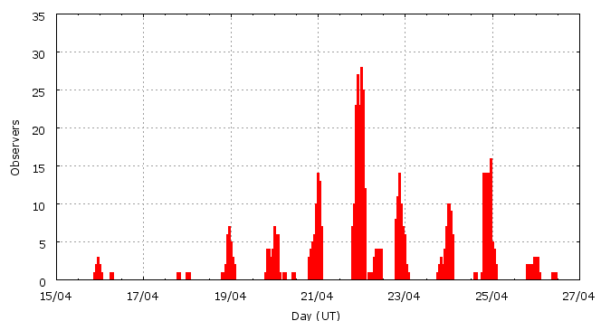

This page shows automated results of the Lyrids 2009, based on visual data entered through the IMO electronic report form. Note that these automated results may not be suitable for scientific use; please refer to manual analysis results published in journal papers (e.g., WGN) when available. Send your feedback regarding this page to Geert Barentsen.
Page generated: 2009 July 15 at 22:15 UT.
ZHRmax = 15 based on 1285 Lyrids in 380 data intervals, assuming fixed population index r = 2.1 and zenith correction 1/sin(hR).

| Time (UT) | Solarlon | nINT | nLYR | ZHR | |
|---|---|---|---|---|---|
| 2009-04-16 00:36 | 26.037 | 6 | 6 | 2 | ±1 |
| 2009-04-18 04:38 | 28.157 | 4 | 2 | 3 | ±2 |
| 2009-04-19 02:04 | 29.031 | 23 | 36 | 3 | ±0 |
| 2009-04-20 01:55 | 30.001 | 26 | 56 | 4 | ±1 |
| 2009-04-20 22:13 | 30.827 | 15 | 56 | 6 | ±1 |
| 2009-04-21 00:22 | 30.914 | 17 | 56 | 6 | ±1 |
| 2009-04-21 01:23 | 30.956 | 14 | 55 | 6 | ±1 |
| 2009-04-21 17:41 | 31.619 | 18 | 55 | 8 | ±1 |
| 2009-04-21 21:54 | 31.790 | 18 | 58 | 10 | ±1 |
| 2009-04-21 22:36 | 31.818 | 17 | 56 | 9 | ±1 |
| 2009-04-21 23:18 | 31.846 | 13 | 59 | 9 | ±1 |
| 2009-04-21 23:48 | 31.867 | 11 | 62 | 7 | ±1 |
| 2009-04-22 00:22 | 31.890 | 15 | 89 | 10 | ±1 |
| 2009-04-22 00:53 | 31.911 | 15 | 67 | 10 | ±1 |
| 2009-04-22 01:22 | 31.931 | 15 | 87 | 12 | ±1 |
| 2009-04-22 01:52 | 31.951 | 10 | 68 | 14 | ±2 |
| 2009-04-22 04:34 | 32.061 | 15 | 63 | 13 | ±2 |
| 2009-04-22 09:05 | 32.245 | 10 | 59 | 15 | ±2 |
| 2009-04-22 15:52 | 32.520 | 13 | 60 | 11 | ±1 |
| 2009-04-22 21:24 | 32.745 | 18 | 59 | 12 | ±2 |
| 2009-04-22 23:11 | 32.818 | 17 | 56 | 10 | ±1 |
| 2009-04-23 20:18 | 33.675 | 23 | 38 | 4 | ±1 |
| 2009-04-24 10:47 | 34.264 | 29 | 53 | 4 | ±1 |
| 2009-04-25 20:26 | 35.629 | 16 | 23 | 2 | ±0 |
| 2009-04-26 10:40 | 36.207 | 2 | 6 | 4 | ±2 |
For each estimation interval: time is the middle of the interval, nINT is the number of observing periods and nLYR is the number of Lyrids involved. ZHR = (1 + sum nLYR) / sum(Teff/C) where Teff is the effective observing time and C is the total correction for limiting magnitude, clouds and zenith correction. The solar longitudes refer to equinox J2000.0.
Data has been received from 78 observers in 21 countries. Thank you for your efforts!

| Observer | Country | Teff | nLYR |
|---|---|---|---|
| Salvador Aguirre | Mexico | 10.10h | 52 |
| Joanna Antosik | Poland | 5.30h | 19 |
| Pierre Bader | Germany | 8.75h | 41 |
| Peter Bakalik | Slovakia | 1.05h | 2 |
| Ricardas Balciunas | Lithuania | 6.00h | 19 |
| Emil Brezina | Czech Republic | 3.36h | 18 |
| Magdalena Buczkowska | Poland | 2.95h | 12 |
| Jakub Cerny | Czech Republic | 3.20h | 23 |
| Igor Chalenko | Ukraine | 3.00h | 16 |
| Marcin Chwa?a | Poland | 3.00h | 3 |
| Tibor Csorgei | Slovakia | 2.33h | 19 |
| Tibor Csorgei | Slovakia | 1.33h | 17 |
| Mark Davis | United States | 1.45h | 11 |
| Ameya Deshpande | India | 1.50h | 4 |
| Mayuresh Desai | India | 3.50h | 15 |
| Sietse Dijkstra | Netherlands | 4.46h | 15 |
| Dariusz Dorosz | Poland | 4.00h | 32 |
| Sergey Dobrowsky | Belarus | 1.71h | 6 |
| Urszula Dzikowicz | Poland | 2.95h | 11 |
| Frank Enzlein | Germany | 10.68h | 45 |
| Christoph Gerber | Germany | 6.45h | 7 |
| Sylvie Gorkova | Czech Republic | 6.00h | 6 |
| Mitja Govedic | Slovenia | 2.61h | 23 |
| Pavol Habuda | Slovakia | 2.70h | 9 |
| Vilem Heblik | Czech Republic | 14.25h | 44 |
| Carl Hergenrother | United States | 1.04h | 7 |
| Ken Hodonsky | United States | 1.80h | 14 |
| Petr Horalek | Czech Republic | 3.70h | 34 |
| Carl Johannink | Netherlands | 7.36h | 12 |
| Lidija Jovanovic | Serbia | 1.42h | 2 |
| Angelika Ju?kiewicz | Poland | 2.95h | 13 |
| Javor Kac | Slovenia | 3.08h | 27 |
| Paulina Kedzierska | Poland | 2.95h | 9 |
| Roman Kostenko | Ukraine | 2.09h | 6 |
| Jakub Koukal | Czech Republic | 34.47h | 162 |
| Peter Van Leuteren | Netherlands | 10.72h | 14 |
| Anna S. Levina | Israel | 2.92h | 14 |
| Tomasz Lojek | Poland | 4.00h | 29 |
| Jer Nan Lou | Taiwan | 1.12h | 2 |
| Robert Lunsford | United States | 1.75h | 13 |
| Marian Majerik | Slovakia | 2.95h | 14 |
| Justyna Mamzer | Poland | 2.95h | 19 |
| Ivana Marjanovic | Serbia | 1.77h | 4 |
| Antonio Martinez | Venezuela | 0.92h | 1 |
| Katarzyna Mielczarek | Poland | 2.95h | 19 |
| Koen Miskotte | Netherlands | 12.41h | 25 |
| Sirko Molau | Germany | 2.25h | 16 |
| Martin Nedved | Czech Republic | 1.07h | 2 |
| Tereza Novotna | Czech Republic | 4.08h | 11 |
| Filip ?olakovi? | Serbia | 4.64h | 13 |
| Karolina Paprocka | Poland | 2.95h | 13 |
| Dominika P?czek | Poland | 2.95h | 15 |
| Nilesh Puntambekar | India | 1.00h | 4 |
| Ella Ratz | Israel | 3.08h | 5 |
| Jurgen Rendtel | Germany | 20.19h | 64 |
| Branislav Savic | Serbia | 2.42h | 9 |
| Branislav Savic | Serbia | 5.07h | 12 |
| Magdalena Sendak | Poland | 2.95h | 15 |
| Ivan Sergey | Belarus | 1.63h | 17 |
| Ivan M. Sergey | Belarus | 0.88h | 5 |
| Rohan Shewale | India | 1.50h | 7 |
| Klaudia Sicinska | Poland | 2.95h | 14 |
| Magdalena Sieniawska | Poland | 3h | 5 |
| Natalia Smus | Poland | 2.95h | 9 |
| Ulrich Sperberg | Germany | 4.05h | 17 |
| Wesley Stone | United States | 2.63h | 37 |
| Matej Sustr | Slovakia | 1.05h | 8 |
| Pavel Svozil | Czech Republic | 2.00h | 11 |
| Raul Truta | Romania | 3.4h | 9 |
| Michel Vandeputte | Belgium | 14.50h | 74 |
| Vilena Velikic | Serbia | 1.42h | 2 |
| Jan Verfl | Czech Republic | 2.52h | 9 |
| Ivo Vespalec | Czech Republic | 11.71h | 71 |
| Amogh Waghmare | India | 2.50h | 12 |
| Thomas Weiland | Austria | 4.39h | 33 |
| Ilkka Yrjola | Finland | 1.05h | 6 |
| Weihou Zeng | China | 2.08h | 6 |
| Przemyslaw Zoladek | Poland | 5.75h | 20 |
Create your own analysis!
Rate intervals: lyr2009_rate.csv (CSV-format).
Magnitude distributions: lyr2009_magn.csv (CSV-format).